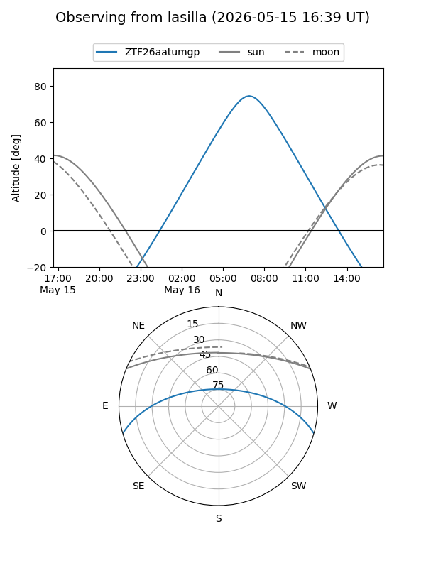
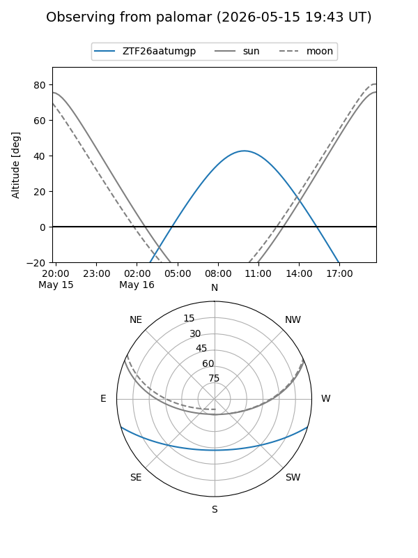

ZTF26aatumgp
Target ZTF26aatumgp at 2026-05-16 11:59
Aliases and brokers:
FINK: link
Lasair: link
ALeRCE: link
alt names
ZTF26aatumgp (ztf,fink_ztf)
Coordinates:
equatorial (ra, dec) = 266.3248,-13.87743
equatorial (HMS+DMS) = 17:45:17.94,-13:52:38.75
galactic (l, b) = (12.8934,+7.84702)
Flags:
Photometry:
last ztfg=19.69
1 ztfg detections
Lightcurve
Visibility


Additional plots